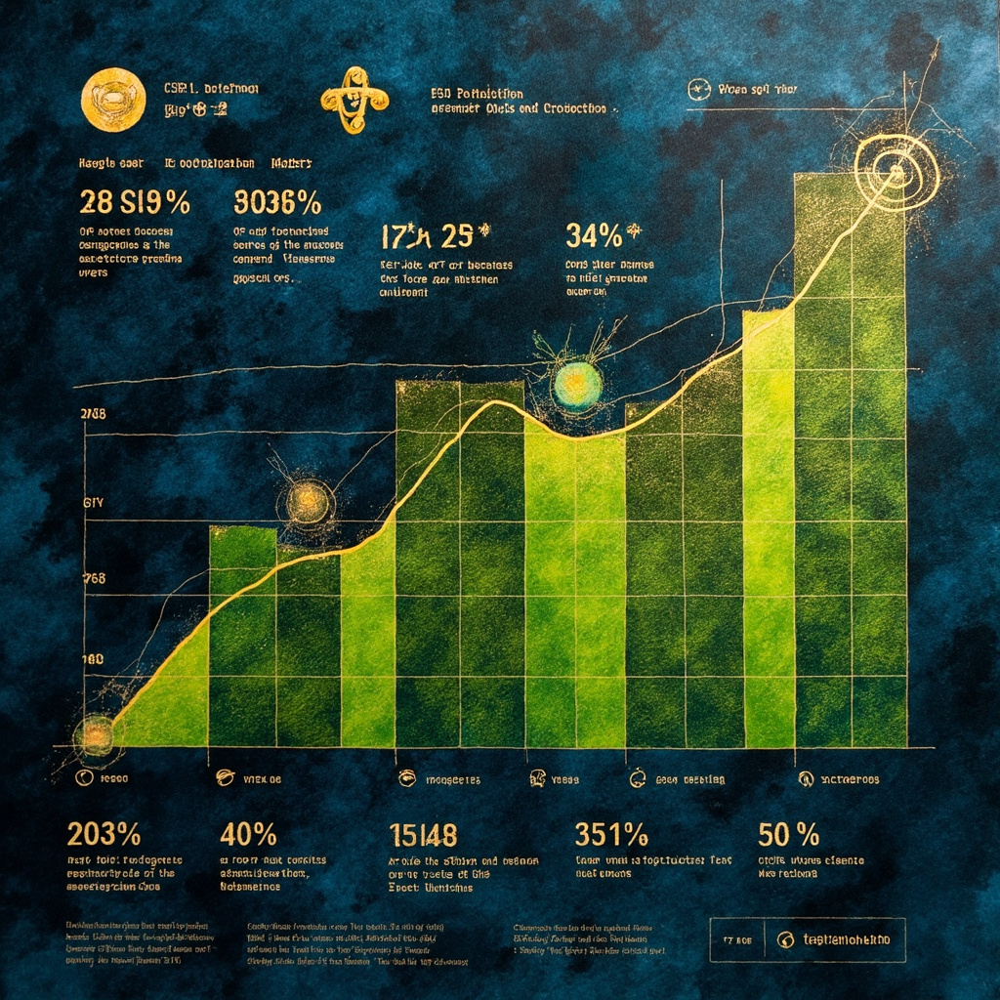
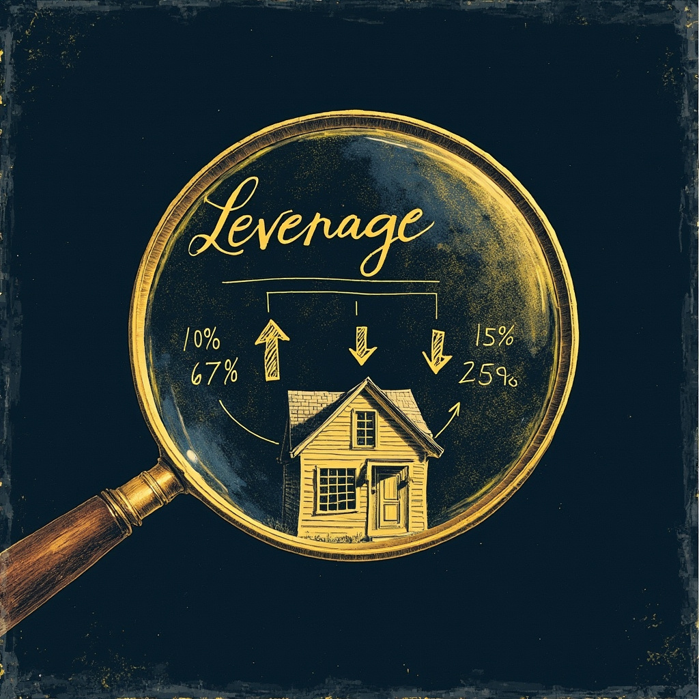
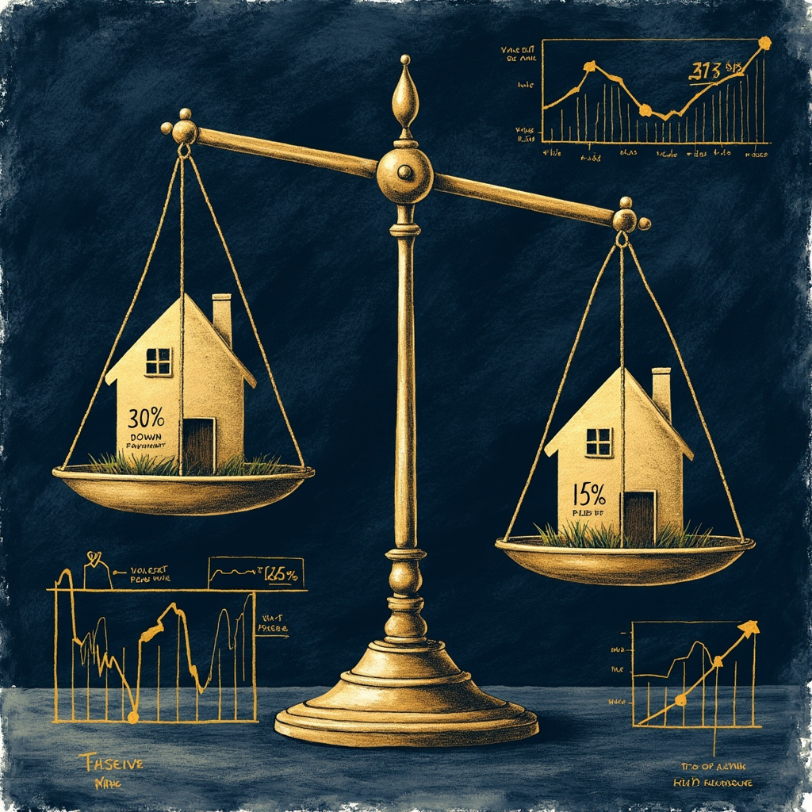
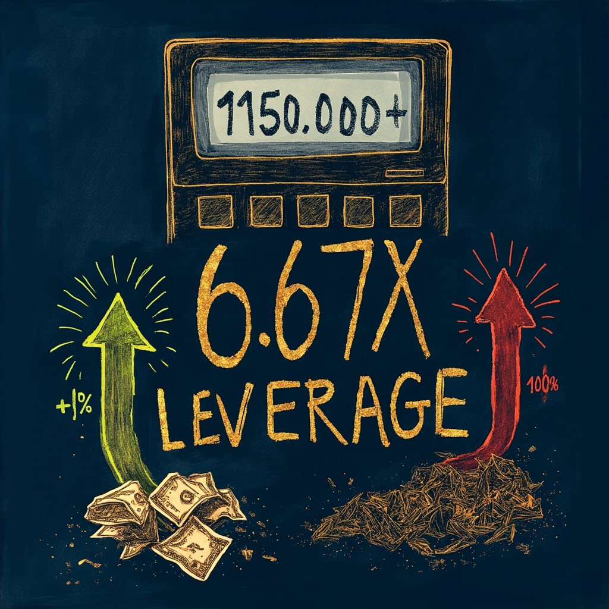
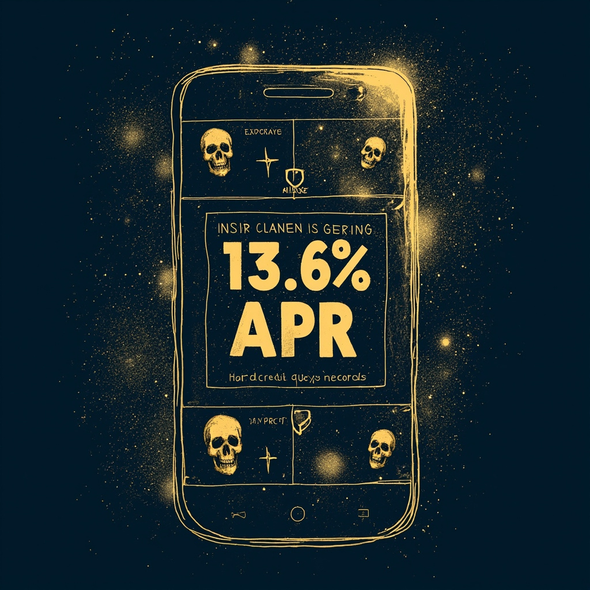

场景代入：刷到房贷首付降到15%，我第一反应是冲？
作为一个写代码又焦虑买房的前端，最近看到"首付从30%降到15%"的新闻，第一反应是——门槛砍一半，机会来了？
冷静三秒，程序员本能警觉：首付越低，杠杆越高。这哪是福利，这是一道数学题。今天用debug金融产品的思路拆一下，保证不堆术语。
概念拆解一：信用 = 你的金融GitHub profile
银行看你能不能借钱，不看工资条，看征信报告。这东西就像你的GitHub：
- 提交记录 = 借款历史
- star数（绿点） = 按时还款
- issue/bug = 逾期记录
- 一条逾期留5年，想merge掉？不可能
央行给每个人建档，身份信息+借款历史+还款记录全在里面。关键结论很扎心：
- 月薪5万但逾期3次 → 银行拒贷
- 月薪1万但从不逾期 → 银行抢着给低息贷款
信用不是收入决定的，是还款记录决定的。

概念拆解二：杠杆 = 不挑方向的放大器
杠杆公式极简：杠杆倍数 = 1 ÷ 首付比例
- 30%首付 → 3.3倍杠杆
- 15%首付 → 6.67倍杠杆
- 不管房子100万还是700万，倍数只看首付比例
同样100万的房子，房价涨10%：
- 全款买：赚10万（收益率10%）
- 30%首付：赚33万（收益率33%）
- 15%首付：赚67万（收益率67%）🚀
但杠杆是放大器，不挑方向，反过来：
- 房价跌10%，30%首付亏33%
- 房价跌15%，15%首付本金直接归零 💀
以前30%首付要跌30%才爆仓，现在15%首付只要跌15%就没了。门槛降了，风险也加倍了。

数据论证：100万的房子，三种剧本
| 剧本 | 30%首付 | 15%首付 |
|---|---|---|
| 涨10% | +33% | +67% |
| 持平 | 月供照还，机会成本 | 月供照还，机会成本翻倍 |
| 跌10% | -33% | -67% |
| 跌15% | -50% | 本金归零 |
一句话：以前你能扛30%跌幅，现在只能扛15%。容错空间直接砍半。

算账冲击：假如你掏15万首付买了100万的房子
- 涨10%：本金15万变25万，赚10万，收益率67%
- 跌15%：本金15万变0，银行开始拍卖你的房子
- 6.67倍杠杆意味着：涨了是天堂，跌了是地狱
这就是为什么政府以前坚持30%首付——不是不想让你买房，是怕你扛不住这个倍数。

两个隐形杀手：硬查询 + 分期真实年化
① 硬查询（征信杀手）：每次点"测一测贷款额度"，征信上多一条查询记录。一个月点5次网贷，银行直接判定"这人到处借钱"，反而拒贷。没事别乱点。
② 分期的真实年化：花呗分12期表面手续费7.5%，实际年化约13.6%。因为每月还本金，利息却按全额算。
- 信息差套利：0元启动，靠认知差，门槛低
- 技能变现：1-3天回本，靠代码手艺，利润率200%+
- 房贷加杠杆：3.3倍是政府给的福利，6.67倍是双刃剑
背着13.6%的成本买一台3个月过时的手机——这叫负收益的杠杆，借钱买的东西在贬值，利息在升值，亏两次。

信用 × 杠杆 = 金融世界的双生子
最后记住这一对关系：
- 信用是杠杆的门票：没信用，银行一分钱都不借你
- 杠杆是信用的放大器：信用越好，借款成本越低，能撬动的钱越多
- 月薪5万但征信烂 → 有钱也借不到便宜钱
- 月薪1万但征信好 → 银行抢着给低息房贷，用别人的钱给自己打工
信用是杠杆的门票，杠杆是信用的放大器。别乱点网贷，别乱加分期——你的GitHub profile比你想的值钱。